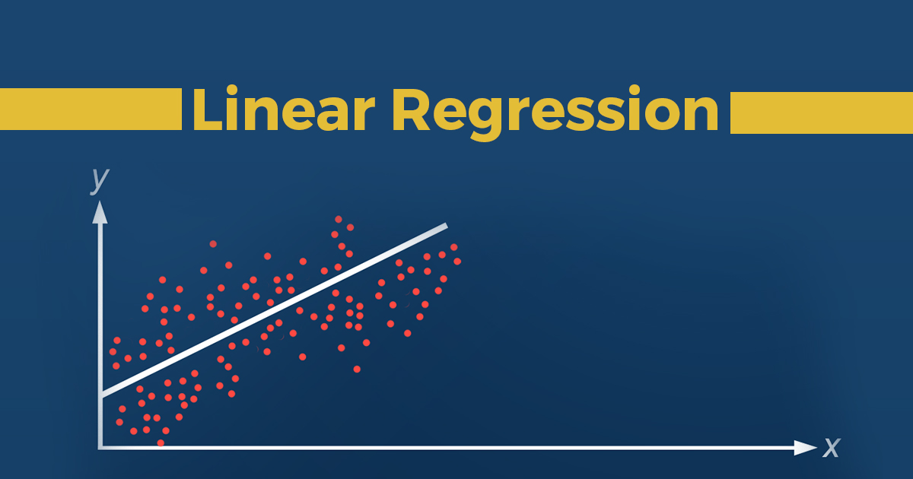

Portfolio | ALL THE LINKS YOU COULD WANT
My PORTFOLIO ON THIS WEBSITE IS MOST LIKELY OUTDATED, PLEASE CHECK OUT MY github IF YOU WANT TO SEE MY UP-TO-DATE PORTFOLIO/PROJECTS!!!!! ♡♡♡♡♡♡♡♡♡♡♡♡♡♡♡♡♡♡♡♡♡♡♡♡♡♡♡♡♡♡♡♡♡♡♡♡♡♡♡♡♡♡♡♡♡♡♡♡♡♡♡♡♡♡♡♡♡♡♡♡
 Data Analytics Projects
Data Analytics Projects
(35 mins read)
2019-2023
A great overview of my favorite data analytic projects, achievements, and tools for BI reporting.
Read More
 Data Engineering Projects
Data Engineering Projects
(30 mins read)
2019-2023
My experiences have allowed me to work with various technologies for creating data pipelines across many enterprises. Here, I outlined some of my favorite data engineering projects as well as the technologies and solutions used for performing ETL.
Read More

Predictive Analysis Model to Forecast Quantity Demand
(8 mins read)
2021
For most companies that offer goods, supply chain disruptions happen mainly due to inventory shortages. This turmoil leads to all the shipping and manufacturing delays we often experience for our orders. This project aims to build a linear regression predictive model with PySpark machine learning library to forecast sales and deal with this type of SC disruption.
Read More
 Anomaly Detection Model (for Data Quality Checks)
Anomaly Detection Model (for Data Quality Checks)
(8 mins read)
2022
In the world of data analytics, poor quality data is one of the biggest challenges we face. I implemented statistical methods to build an anomaly detection model for performing data quality checks within the digital/web environment.
Read More
 Phishing Email Prediction using Machine Learning with Python
Phishing Email Prediction using Machine Learning with Python
(10 mins read)
2021-2022
While data confidentiality is important everywhere, it is especially vital for a healthcare organization to keep their patient’s information safe and secure. Phishing remains one of the major causes of breaches in this type of industry. We use machine learning to detect phishing emails in an attempt to solve this very issue.
Read More
Multiple Linear Regression to Analyze How PM2.5 Air Pollution Affects Our Life Expectancy
(15 mins read)
2018
Inspired by the 2018 deadliest wildfire in all California history, this paper looks into analyzing how PM2.5 air pollution affects the life expectancy of the population on planet earth and to what degree it is affecting it.
Read More